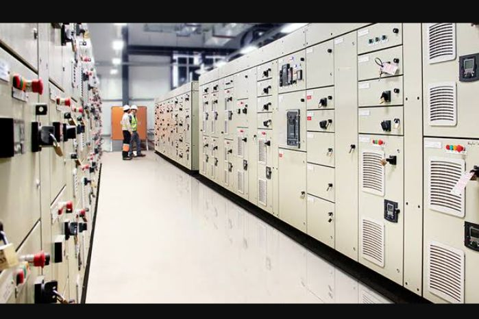

We do industrial electrical installation from scratch till the plant is up and running. We install
MCC,s tubing, wiring and transformer installation of the whole plant. We can set up Ht substation and Lt substation
as well. We have qualified Electrical Engineers with years of experience and traceble working track record.

Motor Control Center for a sugar plant.
Our technicians are well versed at repairs and fault finding as well, when ever there is a fault we search
find the fault and repair it timelessly as our name states.
Distribution Board Wiring
We have experienced electrical technicians with years of experienced wiring DB boards, their work is need and state
of the art when inspectors view our work its a done deal.
Domestic Electrical Installations & Repairs
Domestic home wiring is like food to us. We do excellent work and your home will be safe from electrical faults
and electrical fires. We do no short cuts to make sure you are your family are safe.

Timeless Electrical is not limited, we do electrical repairs for house hold equipment like TV's, irons, microwave
fridge, heater, fans, air-conditioner and radios.


Do not hesitate to call in for quote we have the most friendly and well trained personel at your service